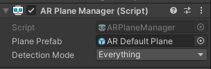
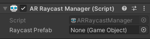
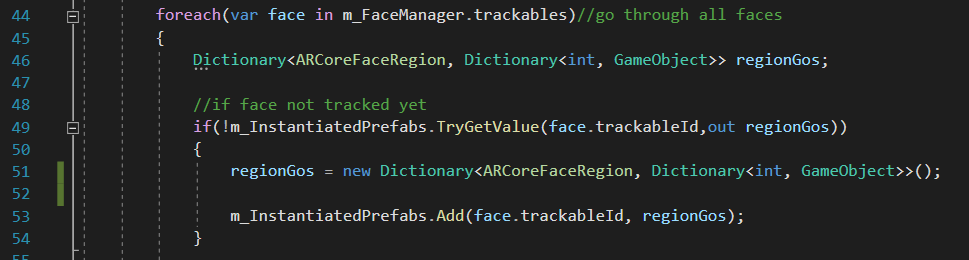
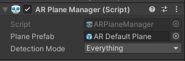
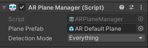
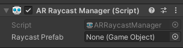
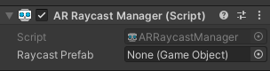

ARCoreSep 16, 2023Using Unity 2021.3.16f1, AR foundation 4.2. The main goal is to learn ARCore. First is to have plane detection and when the user tap on the plane, a cube will appear. I will be following the ar foundation sample from githubI created an empty scene called SampleAR. I deleted the main camera. I right click the hierarchy > XR > AR Session. As described in this documentation "All AR processes, such as motion tracking, environmental understanding, and lighting estimation, happen inside an ARCore session. ARSession is the main entry point to the ARCore API. It manages the AR system state and handles the session lifecycle, allowing the app to create, configure, start, or stop a session. Most importantly, it enables the app to receive frames that allow access to the camera image and device pose" in short an AR Session " Controls the lifecycle of an AR experience"I right click the hierarchy > XR > AR Session Origin. As described in this documentation, an AR session origin "Transforms AR coordinates into Unity world coordinates.". There is an AR camera in AR Session origin - which is why we did not need the default cameraI created 3 buttons where in the onclick referenecs AR Session: Reset, Pause, Resume. Where they call ARSession.Reset,ARSession.enabled(boolean is false) and ARSession.enabled(boolean is true) respectively. Reset clears all detected trackables(Planes and points) and starts a new session. Pause will pause the device tracking and trackable detection - AR Session will not consume CPU resources. Resume a paused ARSession will let the device attempted to relocalize and previously detected objects may shift around as tracking is restablishedOn the AR Session Origin, I added an AR Plane Manager component. As explained here, when a plane is detected, the AR Plane Manager will instantiate a plane prefab. The plane detection can be nothing, everything, horizontal or vertical. I have selected everything

The plane prefab is created by right clicking in the hierarchy > XR > AR Default plane. This AR Default plane is made into a prefab and then dragged into the Plane Prefab field of the AR Plane Manager component.On the AR Session Origin, I added the AR Point Cloud Manager component. This Uses the XRDepthSubsystem to recognize and track depth data in the physical environment.The point cloud prefab is created by right clicking in the hierarchy > XR > AR Default point cloud. This is made into a prefab and then dragged into the point cloud prefab field of the AR Point Cloud Manager ComponentI added the ARRaycastManager component on to the AR Session Origin. Used to raycast against trackables

I created a PlaceOnPlane.cs to be attached to the ARSessionOrigin gameobject. I copied the code from the github example over. Let's analyze what the code this. First is the namespace. I need using UnityEngine.XR.ARFoundation and using UnityEngine.XR.ARSubsystems; So I can reference AR codeIn the Update(), we check if user has touched the screen. If no then we don't need to do anything and return so Update() loop does not continue in this frame. If yes, assign the touchposition and get that touch position back.If there was a touch position, we check what the raycast has hit by calling the Raycast method from ARRaycastManager. The Raycast takes in a Vector2 position,list of ARRaycast hit results, and a trackable type which in this case we choose PlaneWithPolygon We will set the position and orientation to be the 0 index of the list of ARRaycast hit result. This works because ARRaycast hits are sorted by distance so the object we spawn will be placed on the closest distance. If we have not spawned the gameobject yet then spawn it on the closest hit result. Otherwise, change the position of the gameobject to the newly tapped positionBelow is a screenshot of what the plane detection looks likeNext I want to do what the TogglePlaneDetection Sample scene does from the AR Foundation example. In this one, the user presses a button to enable/disable the planes. Analyzing the PlaneDetectionController.cs, I learned two things: (1) I can loop through ARPlaneManager and enable or disable all trackables such as planes by doing
foreach (var plane in m_ARPlaneManager.trackables) plane.gameObject.SetActive(value);where m_ARPlaneManager is a class member variable of type ARPlaneManager (2) and second is I can check or set if the ARPlaneManager is enabled by calling the enabled property like this m_ARPlaneManager.enabled = !m_ARPlaneManager.enabled;Those code are created in a script called PlaneDetectionController.cs and attached to the AR Session Origin gameobject becuase it contains the ARPlaneManager. I kept the AR Default Point Cloud which has a partical system. You can see in the screenshot below that the planes has been detected but the particle system is still there. Check the youtube playlist to see the result!The AR Default plane has a Mesh Renderer component attached to it, so I can change the material. To make sure that material really does change the mesh,I changed it to a frog material that I have in the projectNext is to do facetracking. Start of simple and have a Red nose! I created a new scene and added AR Session and AR Session Origin to the scene. Since By default the AR Face Manager instantiates the prefab at the origin point which is defined as the Center of a user's head (located inside the skull behind the nose), all I need to do is attach the AR Face Manager component to AR Session Origin. The face prefab I attached is a Red sphere - which I had to lower the scale to 0.05 on all axisI made a bulid but the camera was facing the wrong way and I couldn't change the camera orientation. Turns out on AR Camera Manager component that is attached to the AR Camera gameobject, I had to change facing direction to User.Here's the result!Next step is to press buttonss and change the face prefab on run time. I created a script called ARFacePrefabController.cs and attached it to the AR Session Origin. The logic is when a button is clicked, it will loop through all the faces being tracked and change the prefabI also attached ARFace to the all the face prefabs that will be usedI added an OnClick for all the buttons. Dragged in ARSessionOrigin, linked the FacePrefabOnClickChange() and dragged in the prefab that will be spawnedHowever, when I click the button, the prefab does change, I had to point the camera away from the face and then back to the face for the prefab to spawn. This is NOT what I want! I want the prefab to change immediately when the button is clickedI tried accessing the facePrefab.MeshFilter to change the filter. However, it was still the same result where I need to point the camera away then point at the face for the meshfilter to updateThen I tried changing the meshfilter by using ARFace from the ARFaceManager.trackables. This changed the meshfilter immediately!The result below shows the meshfilter changing! But what if I have different materials for each gameobject?After many trials. I redid everything. First, all the gameObject I can spawn have an id to identify them by attaching an ARFaceTrackingGameObjectId.cs. I will use GetComponent to get this id in my ARFacePrefabController.csIn the ARFacePrefabController.cs, there is an array of gameobjects that I want to spawn on the nose pose, left forehead and right foreheadAll on the buttons, there will be a reference to the gameobject I want to switch to. The only purpose of the gameobject reference is to compare the GameObjectid, the button will not be used to instantiate any new gameobjects that the array hasn't already spawnedNow let's look at the code. There is the two arrays to store my left/right forhead gameobjects (since left and right I want to spawn the same gameobjects), and then the nose array. There is the ARFaceManager and ARSessionOrigin. The Dictionary has two inner dictionary. So total 3 dictionaries. The first dictionary's key will store the face. In this case, there can always only be 1 face. The second dictionary key stores the regions (left forehead, right forehead and nose). The last dictionary key will store the gameobject id to spawn. This way each face will only store one region and each region will only store one type of that gameobject that I want to spawn The Start() gets the ARFaceManager and ARSessionOrigin component so we have a reference to them. There is no instance of the dictionary yet so we set that in the Start()To use the region poses, downcase the ARFaceManager's subsystem to ARCoreFaceSubsystem and use subsystem.GetRegionPoses() to obtain pose information for each region: left forehead, right forehead, and tip of the nose. Then check if face is null, if it's null return and don't do anything until a face is detectedWe loop through all the trackables - in this case that is the face. If the face has not been added to the dictionary, added it in and assign the second dictionary (the one where the key of this second dictionary is the regions) as the values.

Use GetRegionPoses() to get all the poses. We want to start adding the regions into the second dictionary. SpawnPrefabsBasedOnRegion is called. Let's see what this function doesSpawnPrefabsBasedOnRegion takes in the ARCoreFaceRegion so we know which region we are checking and the Dictionary we want to add it into. When the region is ForeheadLeft we loop through the eararray gameobjects we want to spawn. For each gameobject in the eararray, we will Instantiate them and child it to the ARSessionOrigin's trackable parent. We check if the region type is in the dictionary - in the case LeftForehead. The result we get will be a dictionary which we want to add the gameobject's id as the key and the instnatiated gameobject as the value. We disable the gameobject because we don't want the gameobject to be enabled at the start - only when the user presses a buttonThe ForeheadRight checks the same ear array and the result is added to the dictionary where the key is ForeheadRightThe nose checks the nosearray and the result is added to the dictionary where the key is noseWe then Get the gameobject position and rotation and set it to the same position and rotation as the regions we want it to be at. Note that we must check if GetPrefab is null, if we don't the app we continue to run, but at the beginning, some gameobject won't appear on the forehead until you press the button multiple times, this is because GetPrefab returns the GameObject or null. Let's see what GetPrefab doesGetPrefab takes in ARCoreFaceRegion and trackableId. It checks if the face's trackable id exists, then checks if the faceregion exists, it then loops through the region dictionary and see if any of the gameobject is enabled, if not then return null, otherwise return that gameobject. Only one gameobject will be enabled at a time. Let's see where those gameobjects are enabled fromEarlier we showed how each button have references to the gameobjects. These functions here is where the id of that gameobject is passed in. The OnButtonChangeNose will pass in the nose region to SetPrefab and the OnButtonChangeEar will pass int he forehead regions to the SetPrefab. Let's see what SetPrefab does.SetPrefab takes in ARCoreFaceRegion and int, this int is the gameObjectid. It will loop through each face and check if the region exists. If that region exists, it will loop through the gameobject dictionary and see if any key matches. If the key matches, then that means the value (type GameObject) is the gameobject we want to enable, so we SetActive(true) otherwise SetActive(False)In OnDestroy() we must dispose the faceregion because it is a NativeArray which is unmanaged code which means the Garbage collection won't automatically destroy itHere is the resultNext is time for some image tracking. First is a Basic Image Tracking from ARFoundation. It will overlay the original image on top of the detected image along with some meta data. First I create a new scene called BasicImagetracking.unity. I removed the MainCamera and added our good old AR Session Origin and AR Session. I added an ARTrackedImageManager component to the ARSessionOrigin gameobject. As explained here, an ARTrackedImageManager performs 2D image tracking (unliked ARTrackedObjectManager, which can detect 3D object using ARKit for iOS). "The AR tracked image manager creates GameObjects for each detected image in the environment. Before an image can be detected, the manager must be instructed to look for a set of reference images compiled into a reference image library. It only detects images in this library." To create the XR reference image library. In the project window select Create > XR >Reference Image Library. This icon of the asset will look like the image belowIn the XR reference image library. I will add the same 3 images from the AR Foundation sample - Rafflesia, logo and QRcode. There are 3 fields: Name - string name available at runtime. Not used by the subsystem but can be used to identify which reference image has been detected. There is no check for duplicate name conflicts. Specify Size - if enabled, you can specify the physical size you expect the image to be in the real world, may be mandatory for some providers (the image tracking subsystem is an interface which is implemented in other packages. Each implementation is called a provider", e.g different provider package for each AR platform). If you edit one dimension (e.g width) causes the other dimension (height) to change automatically based on the image's aspect ratio. Keep Texture at Runtime-If enabled, XRReferenceImage.texture contains a reference to the source texture. useful if you need access to the source texture at runtime. Unchecked by default to reduce build Player size. When unchecked, XRReferenceImage.texture is null.Attach the XR reference image library to the Serialized Libraryfield on the AR tracked image manager component.The max number of moving images - can set number of moving images to track. The Tracked image prefab will be instantiated when an image from the reference imag elibrary is detected. The manager ensures the instantiated gameObject incudles an ARTracked image component. You can get the reference image that was used to detected the ARTrackedImage with the ARTrackedImage.referenceLibrary. In our case, we instantiate a gameobject to display the image's metadata. For now I will keep MaxNumberOfMovingImages as 0 even though the sample project says 4. I want to see if there are any error messages. I created a TrackedImagePrefab made out of a plane and text. The canvas is set to world space so I can place the text on the plane which will be used to display metadata.Now let's analyze TrackedImageInfoManager.cs. This script will overlay the original image on top of the detected image, along with some meta data. This script will be attached to AR Session Origin and it will be looking for ARTrackedImageManager so the class will need an attribute of RequireComponent to look for ARTrackedImageManager. There will be a camera m_WorldSpaceCanvasCamera which will reference the ARCamera. This camera is to set on the world space UI canvas for each instantiated image info. The m_DefaultTexture will be a fallback, in case if an image is detected but no source texture can be found, this texture is used instead.m_TrackedImageManager of type ARTrackedImageManager is assigned to the component's ARTrackedImageManager. The event trackedImagesChanged is subscribed to OnTrackedImagesChanged. The trackedImagesChanged event is notified whenever an image is added (first detected), updated or removed.OnChangedAR takes in ARTrackedImagesChangedEventArgs. This allows me to loop through each updated and added image. If the image is added, I'll set the trackedImage's transform.localScale to a different value and call UpdateInfo. If the trackedImage is being updated, I'll call UpdateInfo only.The UpdateInfo takes in ARTrackedImage. My trackedImage in this case is the ImageInfo prefab which has a canvas. I set that canvas.worldCamera to the ARCamera. Then I'll get the text component from the ImageInfo prefab and assign fill in the referenceImage's name, tracking state(none- image not being tracked, limited-image tracked but not effectively such as image is obscured so not visible to the camera or the image is not tracked as a moving image, which happens when maxNumberOfMovingImages is exceeded. tracking-underlying AR SDK reports that it is actively tracking the image.), guid, reference image size and it's own size. I'll GetChild(0) on the tracked image and then GetChild(0) again which gives me the plane gameobject. If the tracking state is other then None, then enable the plane, extend the image and set a texture. If the tracking state is none then disable the plane. The TrackedImageInfoManager component looks like this. The sprite is a default sprite Unity has. In the build you can see the that there is the text information overlayed on the images. Even with Max Number of moving images as 0, the Unity image state still says tracking. I made another build with the text changed to white so it is easier to read. Max Number of moving images changed to 4. In the Rafflesia you can see that when I am further away from the image, state is tracking but when I zoom in, the image is obscured from the camera so the state is limited. Both builds, the previous image would not get removed.I changed Max Number of Moving Images back to 0 because I want to test what happens if I have two images side by side. It appears both images still gets tracked, and the state are reading correctly.I want to see if an tracked image state is None, can I disable it and then renable it if state is NOT None by using SetActive()That did not seem to disable the images and looked the same as before. I did noticed if I close the image, the state still says limited so maybe that's why the image is still enabled. I tried the same thing with Max Num of moving images to 4 and it was the same resultTo prove if I can disable gameobjects in limited state, I would disable the tracked image if state is limitedAs you can see when the image state is limited the tracked image gameobject is disabled!I undid the limited check and wanted to see if it's possible for removed to be detected and from there is it possible to disable the tracked image. Unfortunaently, having the image detected then moving it away was still being tracked as limited. Let's move on to Image tracking with multiple prefabs, maybe something there will help figure out what's going on here.I created a new scene called ImageTrackingWithMultiplePrefabs. I attached the ARTrackedImageManager to ARSessionOrigin attached the same XRReferenceImageLibrary. There won't be any TrackedImagePrefabs because each image will spawn their own prefabsMy goal is that when an image is first detected, I will instantiate the prefab. If the state is not tracking, disable the gameobject. Each image will spawn a different prefab. Instead of using ARFoundation code, I will use the code I learned from a online tutorial months ago (I can't remember which tutorial it was). This method is using name comparison to spawn the prefab. This means the prefab and the image in the XRReferenceImageLibrary must match. First I need the script to have mentioned a required component of ARTrackedImageManager using the RequireComponent There is a Dictionary called m_InstantiatePrefabsDictionary that will store the name of the referenceImage as the key and the prefab to spawn as the value. If the event trackedImagesChanged is invoked then run OnImageChanged.In OnImageChanged the I will loop through to see when the trackedImages are added, updated, and removed. If added meaning first detected then check if the referenceImage name matches a prefab name in the array, if so, spawn the gameobject on the trackedimage's transform and assign it the imagename as the key and prefab as the value to the dictionary. If updated, check which image it is in the dictionary and enable the gameobject if the trackingState is Tracking, otherwise disable it. If removed, remove it from the dictionary. I attached the script to the to the ARSessionOrigin. The Logo prefab is a flower prefab I exported from the ARFoundation project. The QRCode prefab is a red cylinder. The Rafflesia prefab is a spider and wolf asset from the asset storeIn thie build. The Logo prefab is too big. The QRCode prefab is no where to be seen - most likely the transform is wrong or it is too big and it's clipping. The Rafflesia prefab is the only one that is right on the image.I was interested to see if it had to do with the reference image size. So I changed the folllowing: The Logo prefab is a spider/wolf prefab. The QRCode prefab is the flower. The Rafflesia prefab the red cylinder. After testing, it appears that its not the reference image issue but has to do with either the code or the prefab itself.Recent blogsSee all blogs
 I right click the hierarchy > XR > AR Session Origin. As described in this documentation, an AR session origin "Transforms AR coordinates into Unity world coordinates.". There is an AR camera in AR Session origin - which is why we did not need the default camera
I right click the hierarchy > XR > AR Session Origin. As described in this documentation, an AR session origin "Transforms AR coordinates into Unity world coordinates.". There is an AR camera in AR Session origin - which is why we did not need the default camera
 I created 3 buttons where in the onclick referenecs AR Session: Reset, Pause, Resume. Where they call ARSession.Reset,ARSession.enabled(boolean is false) and ARSession.enabled(boolean is true) respectively. Reset clears all detected trackables(Planes and points) and starts a new session. Pause will pause the device tracking and trackable detection - AR Session will not consume CPU resources. Resume a paused ARSession will let the device attempted to relocalize and previously detected objects may shift around as tracking is restablished
I created 3 buttons where in the onclick referenecs AR Session: Reset, Pause, Resume. Where they call ARSession.Reset,ARSession.enabled(boolean is false) and ARSession.enabled(boolean is true) respectively. Reset clears all detected trackables(Planes and points) and starts a new session. Pause will pause the device tracking and trackable detection - AR Session will not consume CPU resources. Resume a paused ARSession will let the device attempted to relocalize and previously detected objects may shift around as tracking is restablished
 On the AR Session Origin, I added an AR Plane Manager component. As explained here, when a plane is detected, the AR Plane Manager will instantiate a plane prefab. The plane detection can be nothing, everything, horizontal or vertical. I have selected everything

The plane prefab is created by right clicking in the hierarchy > XR > AR Default plane. This AR Default plane is made into a prefab and then dragged into the Plane Prefab field of the AR Plane Manager component.
On the AR Session Origin, I added an AR Plane Manager component. As explained here, when a plane is detected, the AR Plane Manager will instantiate a plane prefab. The plane detection can be nothing, everything, horizontal or vertical. I have selected everything

The plane prefab is created by right clicking in the hierarchy > XR > AR Default plane. This AR Default plane is made into a prefab and then dragged into the Plane Prefab field of the AR Plane Manager component.
 On the AR Session Origin, I added the AR Point Cloud Manager component. This Uses the XRDepthSubsystem to recognize and track depth data in the physical environment.
The point cloud prefab is created by right clicking in the hierarchy > XR > AR Default point cloud. This is made into a prefab and then dragged into the point cloud prefab field of the AR Point Cloud Manager Component
On the AR Session Origin, I added the AR Point Cloud Manager component. This Uses the XRDepthSubsystem to recognize and track depth data in the physical environment.
The point cloud prefab is created by right clicking in the hierarchy > XR > AR Default point cloud. This is made into a prefab and then dragged into the point cloud prefab field of the AR Point Cloud Manager Component
 I added the ARRaycastManager component on to the AR Session Origin. Used to raycast against trackables

I created a PlaceOnPlane.cs to be attached to the ARSessionOrigin gameobject. I copied the code from the github example over. Let's analyze what the code this. First is the namespace. I need
I added the ARRaycastManager component on to the AR Session Origin. Used to raycast against trackables

I created a PlaceOnPlane.cs to be attached to the ARSessionOrigin gameobject. I copied the code from the github example over. Let's analyze what the code this. First is the namespace. I need  We will set the position and orientation to be the 0 index of the list of ARRaycast hit result. This works because ARRaycast hits are sorted by distance so the object we spawn will be placed on the closest distance. If we have not spawned the gameobject yet then spawn it on the closest hit result. Otherwise, change the position of the gameobject to the newly tapped position
Below is a screenshot of what the plane detection looks like
We will set the position and orientation to be the 0 index of the list of ARRaycast hit result. This works because ARRaycast hits are sorted by distance so the object we spawn will be placed on the closest distance. If we have not spawned the gameobject yet then spawn it on the closest hit result. Otherwise, change the position of the gameobject to the newly tapped position
Below is a screenshot of what the plane detection looks like
 Next I want to do what the TogglePlaneDetection Sample scene does from the AR Foundation example. In this one, the user presses a button to enable/disable the planes. Analyzing the PlaneDetectionController.cs, I learned two things: (1) I can loop through ARPlaneManager and enable or disable all trackables such as planes by doing
Next I want to do what the TogglePlaneDetection Sample scene does from the AR Foundation example. In this one, the user presses a button to enable/disable the planes. Analyzing the PlaneDetectionController.cs, I learned two things: (1) I can loop through ARPlaneManager and enable or disable all trackables such as planes by doing
 The AR Default plane has a Mesh Renderer component attached to it, so I can change the material. To make sure that material really does change the mesh,I changed it to a frog material that I have in the project
Next is to do facetracking. Start of simple and have a Red nose! I created a new scene and added AR Session and AR Session Origin to the scene. Since By default the AR Face Manager instantiates the prefab at the origin point which is defined as the Center of a user's head (located inside the skull behind the nose), all I need to do is attach the AR Face Manager component to AR Session Origin. The face prefab I attached is a Red sphere - which I had to lower the scale to 0.05 on all axis
I made a bulid but the camera was facing the wrong way and I couldn't change the camera orientation. Turns out on AR Camera Manager component that is attached to the AR Camera gameobject, I had to change facing direction to User.
Here's the result!
The AR Default plane has a Mesh Renderer component attached to it, so I can change the material. To make sure that material really does change the mesh,I changed it to a frog material that I have in the project
Next is to do facetracking. Start of simple and have a Red nose! I created a new scene and added AR Session and AR Session Origin to the scene. Since By default the AR Face Manager instantiates the prefab at the origin point which is defined as the Center of a user's head (located inside the skull behind the nose), all I need to do is attach the AR Face Manager component to AR Session Origin. The face prefab I attached is a Red sphere - which I had to lower the scale to 0.05 on all axis
I made a bulid but the camera was facing the wrong way and I couldn't change the camera orientation. Turns out on AR Camera Manager component that is attached to the AR Camera gameobject, I had to change facing direction to User.
Here's the result!
 I was interested to see if it had to do with the reference image size. So I changed the folllowing: The Logo prefab is a spider/wolf prefab. The QRCode prefab is the flower. The Rafflesia prefab the red cylinder. After testing, it appears that its not the reference image issue but has to do with either the code or the prefab itself.
I was interested to see if it had to do with the reference image size. So I changed the folllowing: The Logo prefab is a spider/wolf prefab. The QRCode prefab is the flower. The Rafflesia prefab the red cylinder. After testing, it appears that its not the reference image issue but has to do with either the code or the prefab itself.